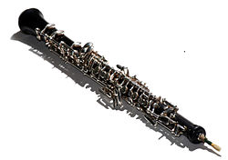

Oboes are a family of double reed woodwind musical instruments. The most
common oboe plays in the treble or soprano range. Oboes are usually made of
wood, but there are also oboes made of synthetic materials. A soprano oboe
measures roughly 65 cm (25 1⁄2 in) long, with metal keys, a conical bore and a
flared bell.
Sound is produced by blowing into the reed and vibrating a column
of air. The distinctive oboe tone is versatile, and has been described as
"bright". When the term oboe is used alone, it is generally taken to mean the
standard treble instrument rather than other instruments of the family, such as
the cor anglais or the oboe d'amore.
In English, prior to 1770, the standard instrument was called a "hautbois",
"hoboy", or "French hoboy" (pronounced /ˈhoʊbɔɪ/ hoh-boy, borrowed from the
French name, a compound word made of haut The spelling of oboe was adopted into
English c. 1770 from the Italian oboè, a transliteration in that language's
orthography of the 17th-century pronunciation of the French name. A musician who
plays the oboe is called an "oboist" or simply an "oboe player".
Today, the oboe is commonly used in concert bands, orchestras, chamber music,
film music, in some genres of folk music, and as a solo instrument, and is
occasionally heard in jazz, rock music, pop music, and popular music.

In comparison to other modern woodwind instruments, the treble oboe is sometimes
referred to as having a clear and penetrating voice. The Sprightly Companion, an
instruction book published by Henry Playford in 1695, describes the oboe as
"Majestical and Stately, and not much Inferior to the Trumpet." Humorously, the
sound of the oboe is described in the play Angels in America as like "that of a
duck if the duck were a songbird".
The rich timbre of the oboe is derived from
its conical bore (as opposed to the generally cylindrical bore of flutes and
clarinets). As a result, oboes are readily audible over other instruments in
large ensembles. The highest note of the oboe is a semitone lower than the
nominally highest note of the B♭ clarinet. Since the clarinet has a wider range
of notes, the lowest note of the B♭ clarinet is significantly deeper (a major or
minor sixth) than the lowest note of the oboe.
Music for the standard oboe is written in concert pitch, and the instrument has
a soprano range, usually from B♭3 up to G6. Orchestras normally tune to a
concert A played by the oboe.
According to the League of American Orchestras,
this is done because the pitch of the oboe is secure and its penetrating sound
makes it ideal for tuning purposes.The pitch of the regular oboe is affected by
the way in which the reed is made. The reed has a significant effect on the
sound of the instrument.
Variations in cane and other construction materials,
the age of the reed, and differences in scrape and length all affect the pitch
of the instrument. German and French reeds, for instance, differ in many ways,
causing the sound of the oboe to vary accordingly.
Weather conditions such as
temperature and humidity also affect the pitch. Skilled oboists adjust their
embouchure to compensate for these factors. Subtle manipulation of embouchure
and air pressure allows the player to express timbre and dynamics.
The regular oboe first appeared in the mid-17th century, when it was called a
hautbois. This name was also used for its predecessor, the shawm, from which the
basic form of the hautbois was derived.
Major differences between the two
instruments include the division of the hautbois into three sections, or joints
(which allowed for more precise manufacture), and the elimination of the
pirouette, the wooden ledge below the reed which allowed players to rest their
lips.
The exact date and place of origin of the hautbois are obscure, as are the
individuals who were responsible. Circumstantial evidence, such as the statement
by the flautist composer Michel de la Barre in his Memoire, points to members of
the Philidor (Filidor) and Hotteterre families.
The instrument may in fact have
had multiple inventors The hautbois quickly spread throughout Europe, including
Great Britain, where it was called "hautboy", "hoboy", "hautboit", "howboye",
and similar variants of the French name.It was the main melody instrument in
early military bands, until it was succeeded by the clarinet.
The standard Baroque oboe is generally made of boxwood and has three keys: a
"great" key and two side keys (the side key is often doubled to facilitate use
of either the right or left hand on the bottom holes).
In order to produce
higher pitches, the player has to "overblow", or increase the air stream to
reach the next harmonic. Notable oboe-makers of the period are the Germans Jacob
Denner and J.H. Eichentopf, and the English Thomas Stanesby (died 1734) and his
son Thomas Jr (died 1754).
The range for the Baroque oboe comfortably extends
from C4 to D6. With the resurgence of interest in early music in the mid 20th
century, a few makers began producing copies to specifications taken from
surviving historical instruments.